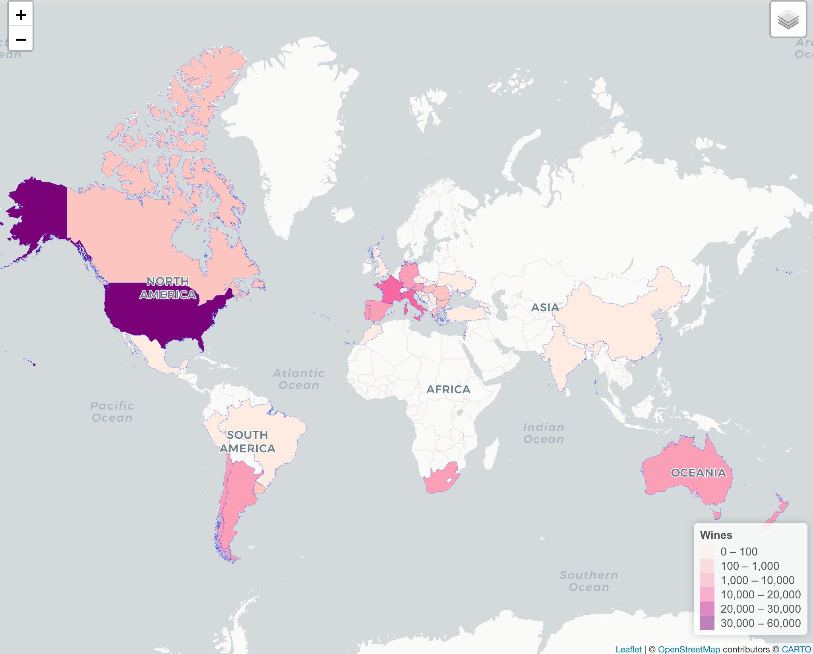

library(tidyverse)## ── Attaching packages ────────────────────────────────────────────────────── tidyverse 1.3.0 ──## ✓ ggplot2 3.3.2 ✓ purrr 0.3.4
## ✓ tibble 3.0.3 ✓ dplyr 1.0.2
## ✓ tidyr 1.1.2 ✓ stringr 1.4.0
## ✓ readr 1.3.1 ✓ forcats 0.5.0## ── Conflicts ───────────────────────────────────────────────────────── tidyverse_conflicts() ──
## x dplyr::filter() masks stats::filter()
## x dplyr::lag() masks stats::lag()library(leaflet)
library(ggplot2)
library(plotly)##
## Attaching package: 'plotly'## The following object is masked from 'package:ggplot2':
##
## last_plot## The following object is masked from 'package:stats':
##
## filter## The following object is masked from 'package:graphics':
##
## layoutlibrary(readxl)
knitr::opts_chunk$set(
fig.width = 6,
fig.asp = .6,
out.width = "90%"
)
theme_set(theme_minimal() + theme(legend.position = "bottom"))
options(
ggplot2.continuous.colour = "viridis",
ggplot2.continuous.fill = "viridis"
)
scale_colour_discrete = scale_color_viridis_d
scale_fill_discrete = scale_fill_viridis_dwine_df =
read_csv(
"./wine_data/tidy/wine_all.csv")## Warning: Missing column names filled in: 'X1' [1]## Parsed with column specification:
## cols(
## X1 = col_double(),
## country = col_character(),
## description = col_character(),
## designation = col_character(),
## points = col_double(),
## price = col_double(),
## province = col_character(),
## region_1 = col_character(),
## taster_name = col_character(),
## title = col_character(),
## variety = col_character(),
## winery = col_character(),
## year = col_double(),
## new_world = col_logical(),
## old_world = col_logical(),
## type = col_character()
## )### remove region 2, taster twitter and missing values in region 1.
#wine_type <- read_csv("./wine_data/winemag-data-130k-v2.csv") %>%
# group_by(variety) %>%
# count() %>%
# arrange(desc(n)) %>%
# as.tibble()Your report should include the following topics. Depending on your project type the amount of discussion you devote to each of them will vary:
This dataset offers us a great opportunity to explore what factors are associated with wine ratings. We hope to conduct regression analysis of the wine rating and price based on location/grape type/notes/region and see if there are significant difference among these categorical predictors. The regression model would help customers estimate and predict wine rating with a series of wine characteristics. We also want to provide people with a interactive website to visualize wine ratings and prices.
#Related work:
Anything that inspired you, such as a paper, a web site, or something we discussed in class.
#Initial questions:
#plots from plotly
#anova analysisWhat questions are you trying to answer? How did these questions evolve over the course of the project? What new questions did you consider in the course of your analysis?
Source, scraping method, cleaning, etc.
The data for this project is downloaded from Kaggle. It was scraped on November 22nd, 2017 from the WineEnthusiast Rating database. Wine Enthusiast is a magazine provide information on wine quality, wine variety, tours and events—in short - everything about wine.
This dataset contains 129971 wine reviews with variety, location, winery, price, description and reviewer information. There is much information on description and title on each wine. We had extracted from the text of useful information such as the year the wine was made in and the characteristics of the taste.
## Vera in charge of editing this sectorprice . Count of evictions (or eviction filings) per year at the census tract level.rating. Calculated using number of evictions or eviction filings divided by the number of renter_occupied_households and multiplied by 100, to be interpreted as a percentage.years_since_2010. Since our data range from 2010 to 2016, and we did not want to assume a constant effect of time, we included year as a set of indicator variables in all models except our empty model (see below).hisp. Percent of population (at census tract level, for all race/ethnicity variables) that self-report Hispanic ethnicity.white. Percent self-reporting White race.black. Percent self-reporting Black race.asian. Percent self-reporting Asian race.aian. Percent self-reporting American Indian / Alaska Native race.nhpi. Percent self-reporting Native Hawaiian / Pacific Islander race.other. Percent self-reporting other race.rent_burden. Average percent of income spent on rent.density. Population density.pct_eng. Percent of population who speak English less than ‘Very Well’. This is interpreted as a proxy for percent English as a second language (ESL) speakers.median_household_income. Median census tract household income in USD.poverty_rate. Percent living below Federal Poverty Line (FPL).median_gross_rent. Median census tract gross rent in USD.pct_renter_occupied. Percent of census tract occupied by renters.median_property_value. Median census tract property value in USD.family_size. Average family size in census tract.pct_fam_households. Percentage of census tract households that contain families.At first, the dataset contains more than 50 wine varieties and it is hard to get useful information. Therefore, we had categorized all varieties to four types of wine: red, white, rose and sparkling according to the following infographics on Wine Folly.
In order to make the US map and World map, we created two separate datasets. The US dataset contained only wines that were from the US.
wine_tidy_df =
read_csv(
"./wine_data/tidy/wine_all.csv") %>%
janitor::clean_names()wine_us = wine_tidy_df %>%
filter(country == "US") %>%
rename(
state = province) %>%
mutate(
state = na_if(state, "America")
) %>%
select(state, points, price) %>%
drop_na() %>%
group_by(state) %>%
summarise(
total = n(),
avg_rating = mean(points),
avg_price = mean(price)
) %>%
mutate(
avg_rating = round(avg_rating, 0),
avg_price = round(avg_price, 2)
) %>%
arrange(desc(total))wine_us_missing = wine_tidy_df %>%
filter(country == "US") %>%
rename(
state = province) %>%
select(state, points, price) %>%
mutate(
state = na_if(state, "America")
)
purrr::map(wine_us_missing, ~ sum(is.na(.)))wine_by_country = wine_tidy_df %>%
mutate(
country = recode(country, US = "United States")
) %>%
select(country, points, price) %>%
group_by(country) %>%
drop_na() %>%
summarise(
total = n(),
avg_rating = mean(points),
avg_price = mean(price)
) %>%
mutate(
avg_rating = round(avg_rating, 0),
avg_price = round(avg_price, 2)
) %>%
arrange(desc(total))wine_country_missing = wine_tidy_df %>%
mutate(
country = recode(country, US = "United States")
) %>%
select(country, points, price)
purrr::map(wine_country_missing, ~ sum(is.na(.)))Wines that contained missing prices and state or country information were removed from the dataset. Among all wines made in the US, there were several wines that were labeled as America under state. Those wines were recoded as missing state values and removed from the US dataset. From the US dataset, there were 95 wines that did not have a state value and 239 wines that were missing a price. From the world dataset, there were 63 wines that missing country information and 8996 wines that did not have a price listed. All wines in the dataset had a rating. As the number of missing values was relatively small in comparison to the total number of observations, all wines that contained missing information on wine origin and price were excluded from the map.
For each dataset, we used summarise to generate average ratings and average prices for each state or country, along with the total count of all wines from each state or country. Average ratings was rounded to the nearest whole number and prices were rounded to 2 decimal points.
states <- states(cb = TRUE)
states %>%
leaflet() %>%
addTiles() %>%
addPolygons(popup = ~NAME)
states_merged_wine <- geo_join(states, wine_us, "NAME", "state")
mybins <- c(0,100,1000,8000,10000,40000)
mypal <- colorBin(palette = "Purples", domain = states_merged_wine$total, na.color = "transparent", bins = mybins)
states_merged_wine <- subset(states_merged_wine, !is.na(total))
popup <- paste0(
states_merged_wine$NAME,"<br>",
"Total Wines: ", states_merged_wine$total, "<br>",
"Avg Rating: ", states_merged_wine$avg_rating, "<br>",
"Avg Price: $", states_merged_wine$avg_price,"<br>"
)
state_map = states_merged_wine %>%
leaflet() %>%
addProviderTiles("CartoDB.Positron") %>%
setView(-98.483330, 38.712046, zoom = 4) %>%
addPolygons(
fillColor = ~mypal(total),
fillOpacity = 1.0,
weight = 0.4,
smoothFactor = 0.2,
popup = ~popup) %>%
addLegend(pal = mypal,
values = states_merged_wine$total,
position = "bottomright",
title = "Wines")world_spdf <- readOGR(
dsn = paste0(getwd(),"/wine_data/world_shape_file/") ,
layer = "TM_WORLD_BORDERS_SIMPL-0.3",
verbose = FALSE
)
world_spdf %>%
leaflet() %>%
addTiles() %>%
addPolygons(popup = ~NAME)
countries_merged_wine <- geo_join(world_spdf, wine_by_country, "NAME", "country")
world_bins <- c(0,100,1000,10000,20000,30000,60000)
world_pal <- colorBin(palette = "RdPu", domain = countries_merged_wine$total, na.color = "transparent", bins = world_bins)
countries_merged_wine <- subset(countries_merged_wine, !is.na(total))
world_popup <- paste0(
countries_merged_wine$country,"<br>",
"Wines: ", countries_merged_wine$total, "<br>",
"Avg Rating: ", countries_merged_wine$avg_rating, "<br>",
"Avg Price: $", countries_merged_wine$avg_price,"<br>"
)
world_map_labels = countries_merged_wine %>%
leaflet() %>%
addMapPane(name = "polygons", zIndex = 410) %>%
addMapPane(name = "maplabels", zIndex = 420) %>%
addProviderTiles("CartoDB.PositronNoLabels") %>%
addProviderTiles("CartoDB.PositronOnlyLabels",
options = leafletOptions(pane = "maplabels"),
group = "labels") %>%
setView( lat = 10, lng = 0 , zoom = 2) %>%
addPolygons(
fillColor = ~world_pal(total),
fillOpacity = 1.0,
group = "country",
weight = 0.4,
smoothFactor = 0.2,
popup = ~world_popup,
options = leafletOptions(pane = "polygons")) %>%
addLayersControl(overlayGroups = c("labels")) %>%
addLegend(pal = world_pal,
values = countries_merged_wine$total,
position = "bottomright",
title = "Wines")

Static Map???
world_static = map_data("world") %>%
left_join(wine_by_country, by = c("region" = "country"))
ggplot(data = world_static,
mapping = aes(x = long, y = lat, group = group)) +
geom_polygon(aes(fill = avg_rating)) +
scale_fill_continuous(low = "rosybrown1", high = "darkred",
na.value = "snow2") +
coord_map(xlim = c(-180,180), ylim = c(-60, 80)) +
theme(
axis.title.x = element_blank(),
axis.text.x = element_blank(),
axis.ticks.x = element_blank(),
axis.title.y = element_blank(),
axis.text.y = element_blank(),
axis.ticks.y = element_blank(),
panel.background = element_rect(fill = "white"))anova 2-sample ttest.
Justify the steps you took, and show any major changes to your ideas.
#Additional analysis: If you undertake formal statistical analyses, describe these in detail
#Discussion: What were your findings? Are they what you expect? What insights into the data can you make?